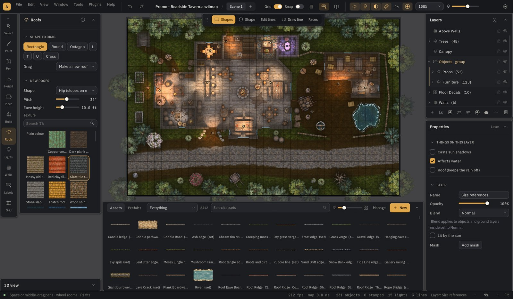
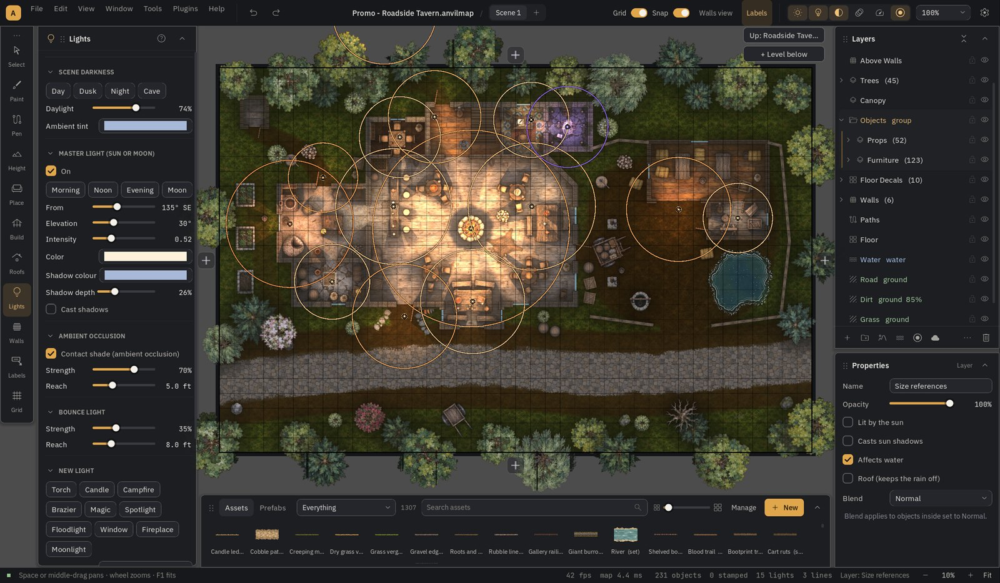

Your first map
A roadside tavern, from a blank map to files you can play on. Tick each step off as you go; this page remembers where you got to.
-
Make the map
On the start screen click New map... (or File > New map, Ctrl+N). Name it, pick Medium 30x20 and click Create map.
A new map comes with a stack of empty layers ready to use: Floor, Paths, Floor Decals, Objects, Walls, Canopy and Above Walls.
-
Paint the ground
Pick the Paint tool (B) and click the first button under Add a paint layer (New ground layer). Choose a grass texture for it, then drag over the map to paint.
- Left-drag shows the texture, right-drag hides it. [ and ] change the brush size.
- Add a second ground layer (dirt or cobbles) for a road and the yard. Each ground layer holds one texture, so you can repaint one without touching the other.

-
Build the tavern
Pick Build (U) and drag a rectangle for the main hall. Walls, floor and ink lines appear on their own.
- Drag another rectangle touching the first to add a kitchen; the shared wall becomes a thin inner wall.
- Draw a rectangle inside a room to split it into two.
- Use the doors mode in the bar over the map, pick a door, and click a wall. It cuts its own opening.

-
Furnish it
In the Assets panel at the bottom, type
tablein Search assets. Click a table, then click inside the hall. Hold Shift to place several.- R turns the selection 15 degrees, F mirrors it, Ctrl+drag drags out a copy.
- Furniture goes on the Furniture layer and small things on Props, so you can hide or lock them separately.
-
Add a roof
Select the building and click Add a roof in Properties, or use the Roofs tool to drag one out. Shape it in Edit lines: drag the ridge, make an end a gable with a right-click.
For play you usually want to see inside: click the eye on the Roofs layer to hide it. A hidden roof still keeps the sun out, so the inside stays shaded.

-
Light it
Pick Lights (L). Click Dusk under Scene darkness, then click Fireplace or Candle under New light and click the map where it goes.
Lamps follow the layer orderA lamp lights its own layer and everything below it. New lamps go on a Lights layer at the top, so they light everything. Drag that layer under the roofs if the lamps should not light the roof tops. See Light and layer order.

-
Label it (optional)
Pick Labels (N), click the map and type. Pull an arrow out of the box and point it at the trapdoor. Labels can go into your exports or stay in the editor only.
-
Save and export
Save with Ctrl+S. Then File > Export (Ctrl+E), keep the ticked outputs and click Export. You get a gridless and a gridded picture, a Roll20 picture and a Universal VTT file with the walls, doors and lights.
Details in Exporting for play.
With the Claude connection on, you can ask Claude for "a two-room roadside tavern at dusk with a stable", watch it build the map live, then refine it by hand. See Connect Claude.